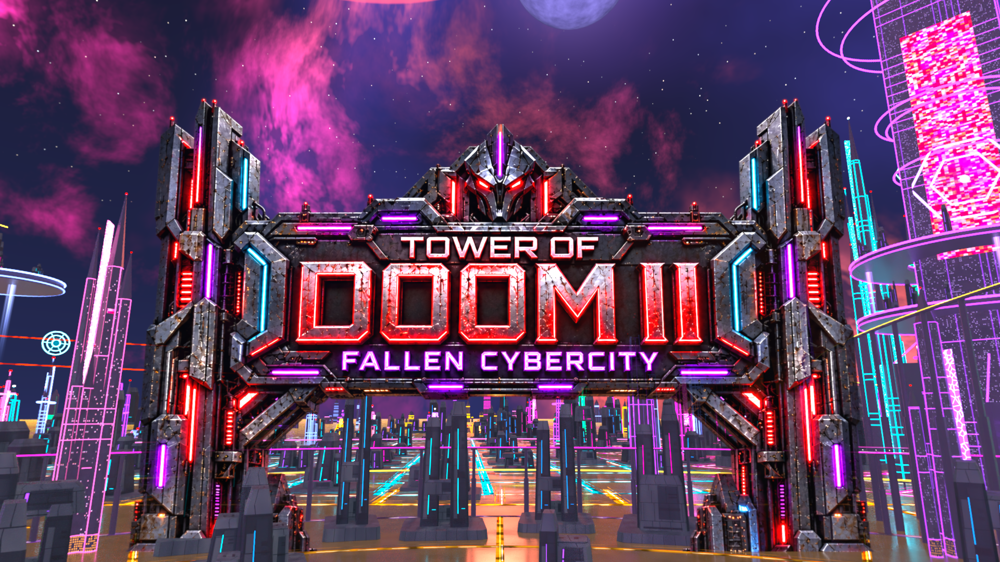
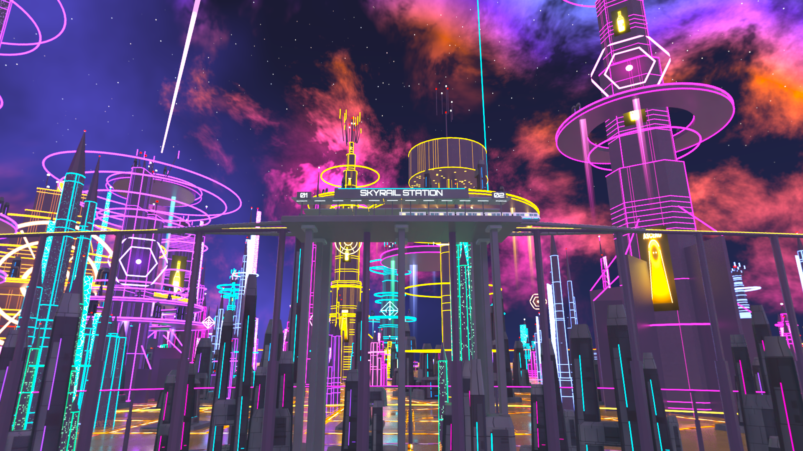
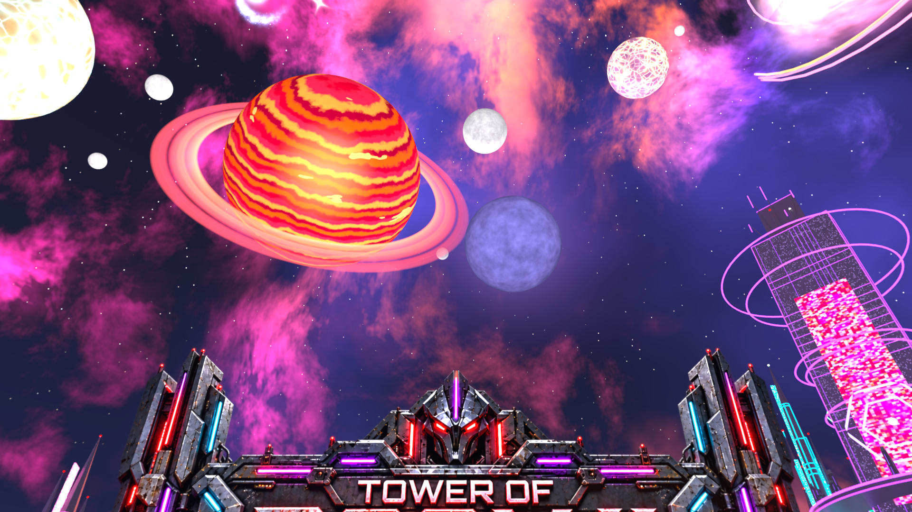
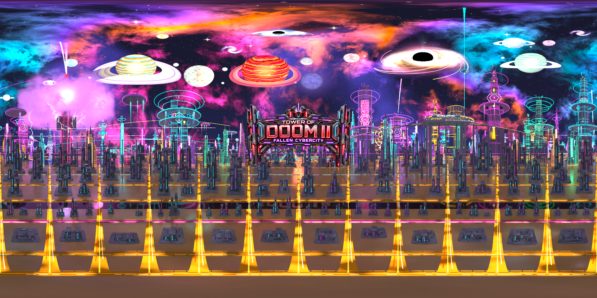

SKY ART REVIEW · SEPTEMBER 30, 2026
Engineered cyber city. An imposing title.
The approved middle ground: heavy metal lettering, an angular mechanical crest and worn cyber architecture. More of the ordinary skyline now shares the tall landmarks’ design, with the reduced building count and open sky preserved.
Native build complete and verified. Ready for your playtest. These are Blender projections using the game's exported sky and an approximate display bracket; they are not game screenshots.

The final title at the cinematic reveal camera.
Run the preview launcher in PowerShell to restore Rendered mode after opening. If opening the Blender file directly shows gray, switch the viewport to Rendered and enable Scene World. View the checked Blender preview.
Compare the same view
The previous gate and the new direction use the same camera and display bracket.
 Previous version — the direction that felt reverted.
New middle ground — engineered sign and expanded cyber skyline.
Previous version — the direction that felt reverted.
New middle ground — engineered sign and expanded cyber skyline.
Space for the landmarks

The station, train and reserved sightline remain.
Planet, ring and moon clearance stays above three degrees.The complete sky

Full panorama. Open the Blender preview to look around.
Artwork, validation and build evidence
The sign artwork was generated with the built-in Imagegen tool from the approved concept. Its generated pixels and transparency are preserved without bitmap edits. Blender adds the sky placement and calibrated material response.
Sign artworkExact image promptArtwork provenanceConcept prompt
Geometry checkLayout comparisonFinal sky measurementsBlender settingsInstalled filesNative build proof
624 modern ordinary buildings; 357 additional smaller spires converted; 1,222 total building groups retained. All eight placed hero towers remain. The recent case-safe asteroid fix is preserved. Runtime appearance is for the user's playtest.